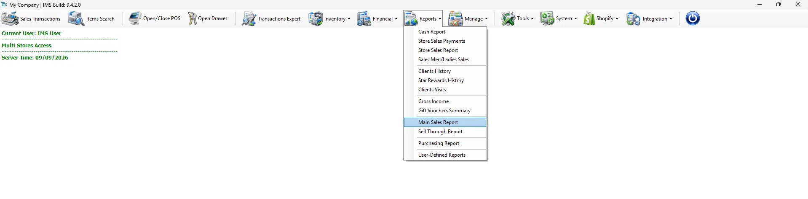
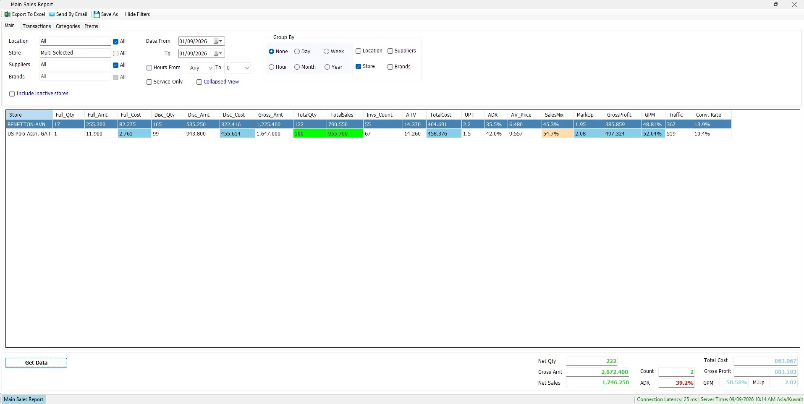
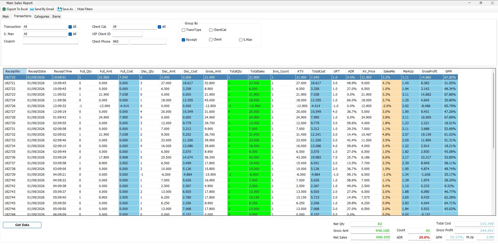
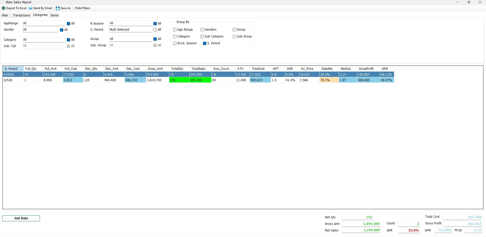
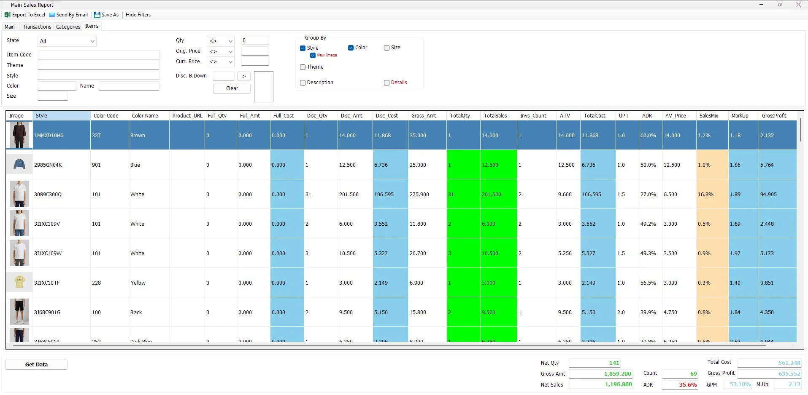

Main Sales Report
The Main Sales Report is IMS's primary sales-analysis report. It combines flexible filters, dynamic grouping, sales/return calculations, retail KPIs and—when mathematically valid—V-Count traffic and conversion rate.

Run a report
- Select the Date From and To.
- Select Location, Store, Supplier and Brand as needed.
- Use the Transactions, Categories and Items tabs for additional filters.
- Select the required Group By options.
- Click Get Data.
- Review the grid and the totals at the bottom of the screen.
While data is being retrieved, Get Data changes to Cancel. Click it again if you need to stop the running report.

Main criteria
| Option | Purpose |
|---|---|
| Location | Select one or more business locations. |
| Store | Select one or more stores available within your access and selected location(s). |
| Suppliers | Restrict merchandise to selected suppliers. |
| Brands | Restrict merchandise to selected brands; brand selection depends on supplier selection. |
| Date From / To | Defines the transaction date range. |
| Hours From / To | Optionally restricts transactions to selected hours. |
| Service Only | Reports service items rather than normal merchandise. |
| Collapsed View | Shows a compact set of principal sales columns. |
| Include inactive stores | Includes inactive stores in store selection for historical reporting. |
Using IMS multi-selection fields
Some IMS criteria fields open a compact multi-selection list instead of a normal drop-down. You can select several values without holding Ctrl.
- Click the criteria field to open the selection list.
- Click an item to select or deselect it. Continue clicking until the required combination is selected.
- Click Close, double-click an item, or click outside the list to apply the selection.
| Field display | Meaning |
|---|---|
| All | All available values are included. If no individual item remains selected, IMS automatically returns the field to All. |
| One name | Exactly one value is selected. |
| Multi Selected | Two or more values are selected. |
Filters vs Group By
Filters decide which transactions are included. Group By decides how those transactions are divided into rows.
Time grouping supports None, Hour, Day, Week, Month and Year. Additional grouping dimensions are available across the Main, Transactions, Categories and Items tabs.
Transactions tab

Transaction filters include Transaction, Sales Man/Lady, Client Category, VIP Client ID, Client Phone and Coupon. The transaction selector uses IMS sales/return transaction codes 51, 52, 53 and 54. Grouping can include Transaction Type, Receipt, Client Category, Client and Sales Man/Lady.
Categories tab

Available classifications include Age Range, Gender, Received Season, Selling Period, Category, Sub Category, Group and Sub Group. Dependent category lists are adjusted when a parent classification is selected.
Items tab & product images

Item criteria include State, Item Code, Theme, Style, Color, Color Name, Size, Quantity, Original Price, Current Price and Discount Breakdown. Quantity and price fields support comparison operators.
Sales and returns
Returns are treated as negative values in the sales report. Codes 53 and 54 reduce net quantity, net sales, cost and gross amount rather than increasing them.
Report KPIs
| KPI | Meaning in IMS |
|---|---|
| Full Qty / Full Amt | Net quantity / amount for lines without item discount. |
| Disc Qty / Disc Amt | Net quantity / amount for discounted lines. |
| Gross Amt | Value before discounts, with returns deducted. |
| TotalQty / Net Qty | Full Qty + Discounted Qty. Both quantities already include negative returns; do not subtract returns again. |
| TotalSales / Net Sales | Full Amt + Disc Amt. Both amounts are already net of their respective returns and discounts. |
| Invs_Count | Distinct receipts represented by that report row. |
| ATV | Net Sales ÷ receipt count. |
| UPT | Net Qty ÷ receipt count. |
| ADR | Average discount rate: 1 − (Net Sales ÷ Gross Amount). |
| AV_Price | Net Sales ÷ Net Qty. |
| SalesMix | Row Net Sales as a proportion of the selected report. |
| TotalCost | Net merchandise cost after returns. |
| GrossProfit | Net Sales − Total Cost. |
| GPM | Gross Profit ÷ Net Sales. |
| M.Up / MarkUp | Net Sales ÷ Total Cost. |
For inventory-item quantities, Full Qty contains undiscounted lines and Disc Qty contains discounted lines, each net of its respective returns. Service-item reporting uses its own item population.
Invs_Count for the receipt count within a report row.Traffic & Conversion Rate
Conversion Rate = sales receipts ÷ Traffic. For conversion, IMS counts sales transaction codes 51 and 52. Return codes 53 and 54 are excluded from the conversion numerator.
Traffic can be added only when the report can be correctly matched to V-Count data. Valid traffic groupings are Location, Store and/or a time period. Product, customer, salesperson, transaction-type and other sales-specific groupings or filters disable traffic because store traffic cannot be accurately divided across those rows.
Export, email and Save As
Export To Excel exports the current grid. If images are enabled, IMS can include them; very large exports may ask whether to include images or data only. Send By Email sends report data without product images. Save As requires a generated report.
Permissions
Excel export, email, client grouping and sensitive financial measures such as cost, markup and profit are controlled by IMS user access policies. Users without the corresponding permission will not see those options or columns.
Common questions
Why is Conversion Rate missing?
The selected grouping or filters cannot be matched fairly to store traffic, or no V-Count data exists for that row.
Why does Count change when I add Group By fields?
The bottom Count is the number of displayed rows, so additional grouping usually creates more rows.
Do returns increase conversion?
No. Returns reduce the financial and quantity results, but return codes 53 and 54 are excluded from the conversion numerator.
Why can I not load images?
View Image requires Style and Color Code to be present in the generated report.
Supplier and Brand master data
The Supplier and Brand values used by Main Sales Report come from Manage → Suppliers. Brands are maintained under their supplier, so the available Brand criteria are tied to the supplier master relationship.
Sales Man/Lady master data
The S. Man criteria and Sales Man/Lady grouping on the Transactions tab use the salesperson master maintained in Manage → Sales Men/Ladies. IMS identifies the salesperson by the master ID stored on the sales transaction.
Item master data behind the report
The merchandise fields used by Main Sales Report come from Manage → Items. This includes Item Code, State, Theme, Style, Color, Size, Description, Category/Sub Category, Product Group/Sub Group, statistical periods, Supplier, Brand, Age Range and Gender.
When View Image is used, IMS loads the product image maintained by Style + Color Code. The same image is therefore shared by the Size variants of that Style/Color.
Service Item master data
Service Only uses the Service Items maintained in Manage → Service Items. These records are stored as Type = Service, allowing IMS to separate service activity from normal merchandise sales.
Merchandise classification masters
The report's merchandise classifications come from the same masters used by Manage → Items:
| Report field | IMS master |
|---|---|
| Category / Sub Category | Manage → Categories |
| Group / Sub Group | Manage → Product Groups |
| Age Range | Manage → Age Ranges |
| Gender | Manage → Genders |
| S. Period | Manage → Statistical Periods |
Sale Season pricing
Discounted transactions can originate from merchandise pricing maintained through Manage → Sale Seasons. A Sale Season assigns specific Item Codes a temporary sale price; sales recorded at that price flow into the report's Full/Discount quantities and amounts according to the transaction data.
The Items tab's current Item State and price criteria are based on the current Item master. Historical sales amounts remain the values recorded on the original transactions.
Special Offers and posted sales
Manage → Special Offers is evaluated by the sales/POS workflow. When an offer is used, the transaction retains the Offer ID. The Main Sales Report reports the resulting posted transaction values — including full-price and discounted quantities/amounts — rather than recalculating the promotion definition.
This is why changing an offer later does not rewrite historical sales: the report is based on what was recorded on the original transaction.